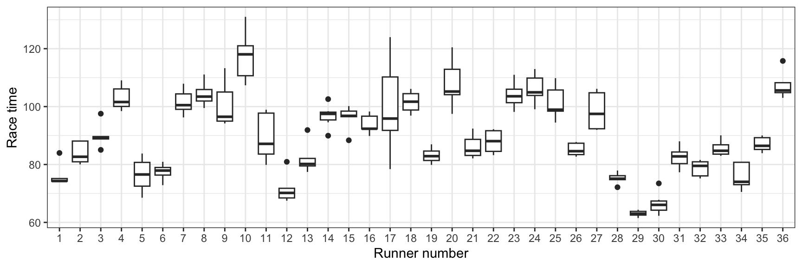
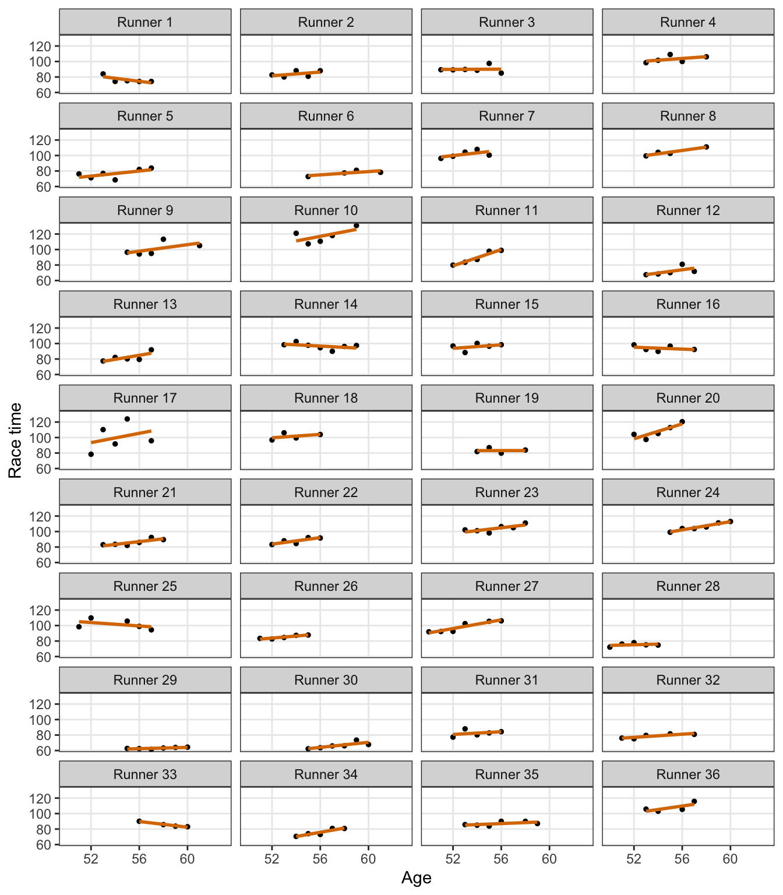
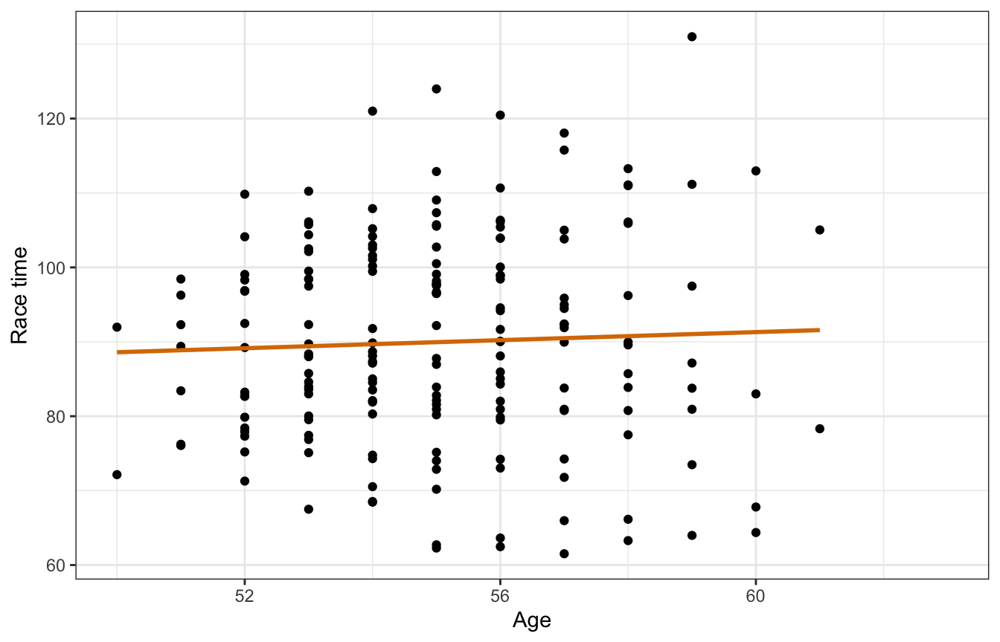
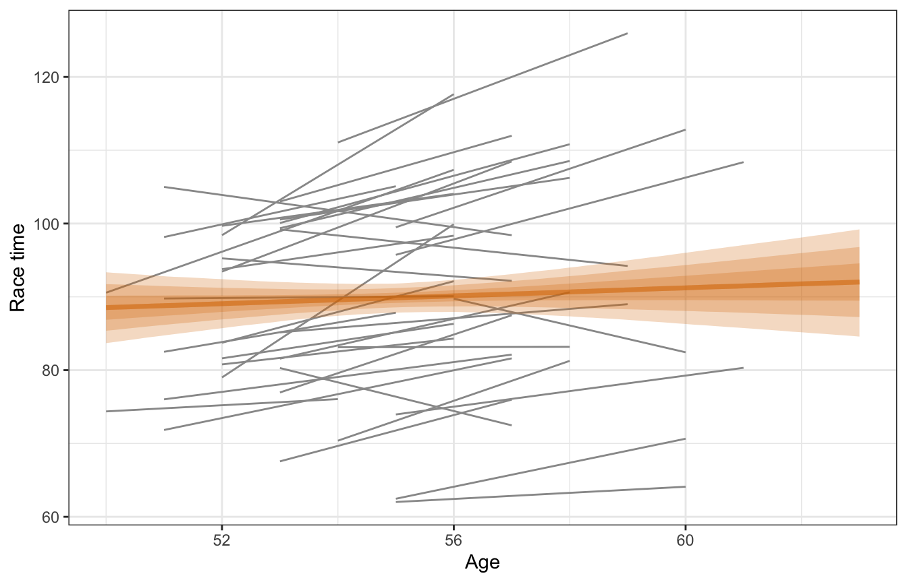
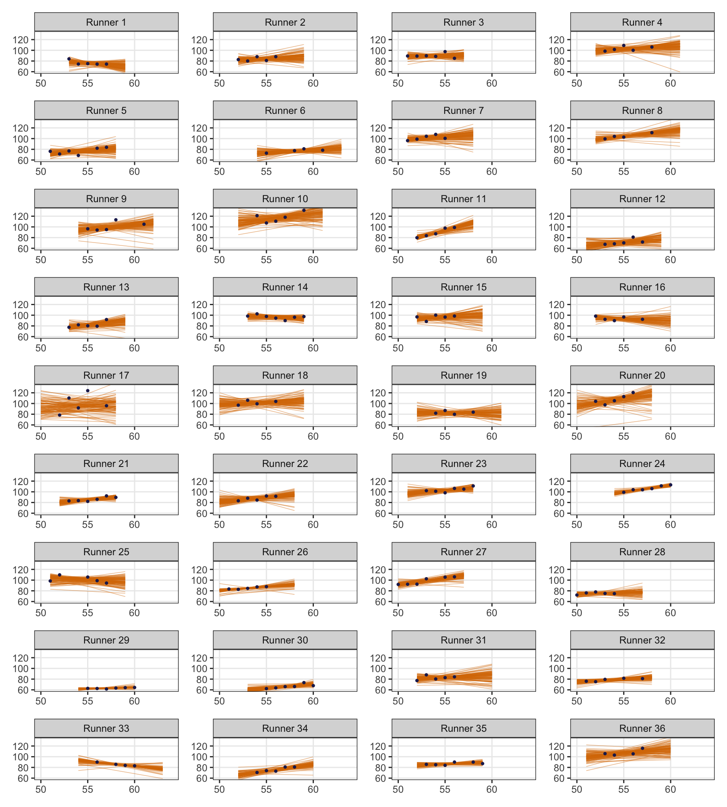
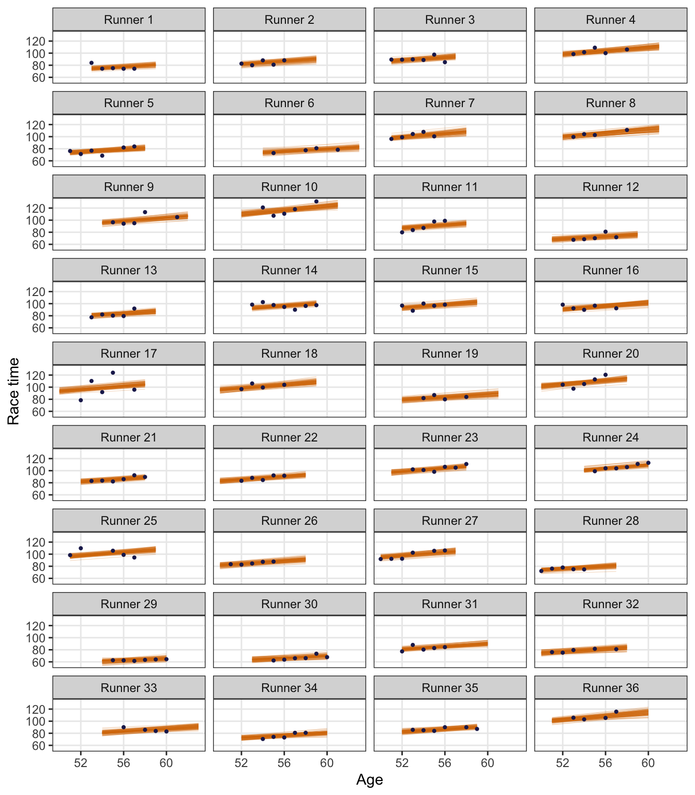

library(bayesrules)
library(tidyverse)
library(brms)
library(cmdstanr)
library(rstanarm)
library(broom)
library(broom.mixed)
library(parameters)
library(tidybayes)
library(patchwork)
library(scales)
# tikz stuff
# Necessary for using dvisvgm on macOS
# See https://www.andrewheiss.com/blog/2021/08/27/tikz-knitr-html-svg-fun/
Sys.setenv(LIBGS = "/usr/local/share/ghostscript/9.53.3/lib/libgs.dylib.9.53")
font_opts <- list(dvisvgm.opts = "--font-format=woff")
# Plot stuff
clrs <- MetBrewer::met.brewer("Lakota", 6)
theme_set(theme_bw())
# Tell bayesplot to use the Lakota palette for things like pp_check()
# bayesplot::color_scheme_set(clrs)
# Tell bayesplot to use the viridis rocket palette for things like pp_check()
viridisLite::viridis(6, option = "rocket", end = 0.85, direction = -1) |>
# Take off the trailing "FF" in the hex codes
map_chr(~str_sub(., 1, 7)) |>
bayesplot::color_scheme_set()
# Seed stuff
set.seed(1234)
BAYES_SEED <- 1234
# Data
data(cherry_blossom_sample, package = "bayesrules")
running <- cherry_blossom_sample %>%
select(runner, age, net) |>
mutate(runner_nice = glue::glue("Runner {runner}"),
runner_nice = fct_inorder(runner_nice))Reading notes
Multilevel models are exciting
The general setup
This running data has the race times for 36 different runners for a 10-mile in race that they’ve run for multiple years
In the book, Figure 15.1 is a boxplot showing each runner’s race time:
running |>
ggplot(aes(x = runner, y = net)) +
geom_boxplot() +
labs(x = "Runner number", y = "Race time")
There’s variation across runners (e.g., runner 4 is consistently slower than runners 5 and 6), and there’s variation within runners (e.g., runner 6 has had roughly the same time every race; runner 17 ranges from 80ish to 120ish)
We can also see this if we look at patterns across age within each runner. People line runner 29 are consistently fast over time; runner 17 bounces around a lot.
running |>
ggplot(aes(x = age, y = net)) +
geom_point(size = 1) +
geom_smooth(method = "lm", se = FALSE, size = 1, color = clrs[4]) +
facet_wrap(vars(runner_nice), ncol = 4) +
labs(x = "Age", y = "Race time") +
theme(panel.grid.minor = element_blank())
When analyzing this kind of data, we have to do special stuff with it to incorporate our understanding of these different structures (i.e. repeated runners across time). Before getting into hierarchical models (the point of this unit), it’s helpful to look at two extreme ways of handling the data: complete pooling and no pooling.
15.1: Complete pooling
With complete pooling we lump all the observations together into one pool of information and basically treat each row as independent:
running |>
ggplot(aes(x = age, y = net)) +
geom_point() +
geom_smooth(method = "lm", se = FALSE, color = clrs[4]) +
labs(x = "Age", y = "Race time")
We can then model this with a normal regression model with vague priors:
\[ \begin{aligned} \text{Race time}_i &\sim \mathcal{N}(\mu_i, \sigma) \\ \mu_i &= \beta_0 + \beta_1\, \text{Age}_i \\ \\ \beta_0 &\sim \mathcal{N}(0, 35) \\ \beta_1 &\sim \mathcal{N}(0, 2.5) \\ \sigma &\sim \operatorname{Exponential}(1/10) \end{aligned} \]
priors <- c(prior(normal(0, 35), class = Intercept),
prior(normal(0, 2.5), class = b),
prior(exponential(0.1), class = sigma))
model_complete_pooling_brms <- brm(
bf(net ~ age),
data = running,
family = gaussian(),
prior = priors,
chains = 4, cores = 4, iter = 4000, seed = BAYES_SEED,
backend = "cmdstanr", refresh = 0,
file = "15-manual_cache/complete-pooling-brms"
)tidy(model_complete_pooling_brms, effects = "fixed", conf.level = 0.8)
## # A tibble: 2 × 7
## effect component term estimate std.error conf.low conf.high
## <chr> <chr> <chr> <dbl> <dbl> <dbl> <dbl>
## 1 fixed cond (Intercept) 75.2 24.6 43.1 107.
## 2 fixed cond age 0.267 0.447 -0.306 0.850# Put the results in a list
m_pool_complete <- model_complete_pooling_brms |>
tidy(effects = "fixed", conf.level = 0.8) |>
mutate(term = janitor::make_clean_names(term)) |>
split(~term)model_complete_pooling_rstanarm <- stan_glm(
net ~ age,
data = running,
family = gaussian,
prior_intercept = normal(0, 35),
prior = normal(0, 2.5),
prior_aux = exponential(0.1),
chains = 4, iter = 5000*2, seed = BAYES_SEED, refresh = 0
)tidy(model_complete_pooling_rstanarm, conf.int = TRUE, conf.level = 0.8)
## # A tibble: 2 × 5
## term estimate std.error conf.low conf.high
## <chr> <dbl> <dbl> <dbl> <dbl>
## 1 (Intercept) 75.4 24.3 44.5 107.
## 2 age 0.263 0.439 -0.309 0.826Based on this, a one-year increase in age is associated with a race time that is 0.27 minutes longer, on average, but with an 80% credible interval of -0.31 to 0.85, so essentially there’s no effect. But that’s likely not the case—we would expect most people to get slower over time. And that is indeed the case if we look at the age trends for each runner. The pooled line is basically flat while the individual lines all have (generally upward) slopes.
model_complete_pooling_brms |>
add_epred_draws(newdata = tibble(age = seq(min(running$age),
max(running$age),
length.out = 100))) |>
ggplot(aes(x = age, y = .epred)) +
geom_smooth(data = running,
aes(y = net, group = runner), method = "lm", se = FALSE,
color = "grey60", size = 0.5) +
stat_lineribbon(alpha = 0.25, fill = clrs[4], color = clrs[4]) +
labs(x = "Age", y = "Race time")
lol this model isn’t great. It doesn’t keep any information about participants and treats every row as its own independent chunk of the population:
15.2: No pooling
Instead of lumping all the runners, we can keep complete information about each runner by not lumping anything together at all. Note how here there’s no node for “Population” here like before—with the no pooling approach, we treat each runner as the complete population for that person:
More formally, this entails running the linear model for each runner \(j\) in their \(i\)th race:
\[ \begin{aligned} \text{Race time}_{i_j} &\sim \mathcal{N}(\mu_{i_j}, \sigma) \\ \mu_{i_j} &= \beta_{0_j} + \beta_{1_j}\, \text{Age}_{i_j} \\ \\ \beta_0 &\sim \mathcal{N}(0, 35) \\ \beta_1 &\sim \mathcal{N}(0, 2.5) \\ \sigma &\sim \operatorname{Exponential}(1/10) \end{aligned} \]
There’s some mathematical trickery we can do with interaction terms to just fit one model and get unique slopes and intercepts for each runner (net ~ age + runner + age*runner), but practically speaking, this no pooled approach entails running a single model for each runner.
So for fun and excitement and learning, we’ll do that here! The underlying Stan code for model_complete_pooling_brms is the same as what we need for this no pooling model, so we’ll just re-run that model over and over (with update()) with subsets of the data—one subset per runner.
no_pooling <- tibble(runner = levels(running$runner)) |>
mutate(data = map(runner, ~filter(running, runner == .x))) |>
mutate(model = map(data, ~update(model_complete_pooling_brms,
newdata = .x)))
## Start sampling
## Start sampling
## Start sampling
## Start sampling
## Start sampling
## Start sampling
## Start sampling
## Start sampling
## Warning: 2 of 8000 (0.0%) transitions ended with a divergence.
## See https://mc-stan.org/misc/warnings for details.
## Start sampling
## Start sampling
## Start sampling
## Warning: 1 of 8000 (0.0%) transitions ended with a divergence.
## See https://mc-stan.org/misc/warnings for details.
## Start sampling
## Start sampling
## Start sampling
## Start sampling
## Start sampling
## Start sampling
## Start sampling
## Start sampling
## Warning: 1 of 8000 (0.0%) transitions ended with a divergence.
## See https://mc-stan.org/misc/warnings for details.
## Start sampling
## Start sampling
## Start sampling
## Start sampling
## Start sampling
## Start sampling
## Start sampling
## Start sampling
## Start sampling
## Start sampling
## Warning: 1 of 8000 (0.0%) transitions ended with a divergence.
## See https://mc-stan.org/misc/warnings for details.
## Start sampling
## Start sampling
## Start sampling
## Start sampling
## Warning: 40 of 8000 (0.0%) transitions ended with a divergence.
## See https://mc-stan.org/misc/warnings for details.
## Start sampling
## Start sampling
## Start samplingNow each runner has their own intercept and slope!
no_pooling_results <- no_pooling |>
mutate(tidied = map(model, ~tidy(., effects = "fixed"))) |>
select(-data, -model) |>
unnest(tidied) |>
filter(term %in% c("(Intercept)", "age")) |>
select(runner, term, estimate) |>
pivot_wider(names_from = "term", values_from = "estimate") |>
rename(beta0 = `(Intercept)`, beta1 = age)
no_pooling_results
## # A tibble: 36 × 3
## runner beta0 beta1
## <chr> <dbl> <dbl>
## 1 1 155. -1.44
## 2 2 37.3 0.856
## 3 3 85.8 0.0680
## 4 4 58.0 0.803
## 5 5 5.74 1.31
## 6 6 22.9 0.925
## 7 7 37.9 1.19
## 8 8 2.36 1.85
## 9 9 24.6 1.30
## 10 10 32.4 1.47
## # … with 26 more rowsWe can even plot these runner-specific models:
runner_ages <- running |>
group_by(runner) |>
summarize(age_min = min(age), age_max = max(age)) |>
mutate(age_range = map2(age_min, age_max, ~tibble(age = seq(.x, .y, length.out = 100)))) |>
select(runner, age_range)
no_pooling_epreds <- no_pooling |>
left_join(runner_ages, by = "runner") |>
mutate(epred = map2(model, age_range, ~epred_draws(.x, .y, ndraws = 100)))
no_pooling_plots <- no_pooling_epreds |>
mutate(plot = map2(epred, data, ~{
ggplot(.x, aes(x = age, y = .epred)) +
geom_line(aes(group = .draw), size = 0.25, color = clrs[4], alpha = 0.5) +
geom_point(data = .y, aes(y = net), size = 0.75, color = clrs[6]) +
labs(x = NULL, y = NULL) +
coord_cartesian(xlim = c(50, 64), ylim = c(60, 132)) +
theme(panel.grid.minor = element_blank()) +
facet_wrap(vars(runner_nice))
}))wrap_plots(no_pooling_plots$plot, ncol = 4)
But that’s not really all that helpful at all. If we want to predict the race time for a new runner who is 58 years old (or any age), we can’t! As Bayes Rules! says:
Since they’re tailored to the 36 individuals in our sample, the resulting 36 models don’t reliably extend beyond these individuals.
These individual models can’t “communicate” with each other and are too isolated and unwieldy.
15.3 & 15.4: Partial pooling with hierarchical models
This data, however, has a natural hierarchical structure to it. Within our population, we have observations that are grouped by runner. There is variation within each runner, and variation across or between each runner. According to Bayes Rules!, we have:
- Within-group variability: The degree of the variability among multiple observations within each group can be interesting on its own. For example, we can examine how consistent an individual’s running times are from year to year.
- Between-group variability: Hierarchical data also allows us to examine the variability from group to group. For example, we can examine the degree to which running patterns vary from individual to individual.
We can visualize the structure like this:
And this chapter doesn’t cover how to run a model with this structure, but we’ll do it here for fun:
priors <- c(prior(normal(0, 35), class = Intercept),
prior(normal(0, 2.5), class = b),
prior(exponential(0.1), class = sigma),
prior(student_t(3, 0, 15), class = sd, lb = 0))
model_partial_pooling_brms <- brm(
bf(net ~ age + (1 + age | runner)),
data = running,
family = gaussian(),
prior = priors,
chains = 4, cores = 4, iter = 8000, threads = threading(2), seed = BAYES_SEED,
backend = "cmdstanr", refresh = 0,
file = "15-manual_cache/partial-pooling-brms"
)tidy(model_partial_pooling_brms)
## # A tibble: 6 × 8
## effect component group term estim…¹ std.e…² conf.…³ conf.…⁴
## <chr> <chr> <chr> <chr> <dbl> <dbl> <dbl> <dbl>
## 1 fixed cond <NA> (Intercept) 22.1 12.1 -1.51 46.0
## 2 fixed cond <NA> age 1.23 0.222 0.790 1.67
## 3 ran_pars cond runner sd__(Intercept) 8.24 6.11 0.334 23.0
## 4 ran_pars cond runner sd__age 0.269 0.117 0.0463 0.549
## 5 ran_pars cond runner cor__(Intercept).… -0.273 0.561 -0.972 0.890
## 6 ran_pars cond Residual sd__Observation 5.18 0.305 4.62 5.81
## # … with abbreviated variable names ¹estimate, ²std.error, ³conf.low,
## # ⁴conf.highWe’ll get into how to interpret all these population-level (“fixed effects”) and group-level (“random effects”) things in future chapter. Or look at this guide of mine here.
In the meantime, for fun, here’s what this all looks like when plotted:
model_partial_pooling_brms |>
epred_draws(newdata = unnest(runner_ages, age_range),
ndraws = 100,
re_formula = NULL) |>
ggplot(aes(x = age, y = .epred)) +
geom_line(aes(group = paste(runner, .draw)),
size = 0.1, color = clrs[4], alpha = 0.5) +
geom_point(data = running, aes(y = net), size = 0.75, color = clrs[6]) +
labs(x = "Age", y = "Race time") +
theme(panel.grid.minor = element_blank()) +
facet_wrap(vars(runner), ncol = 4,
labeller = as_labeller(function(x) glue::glue("Runner {x}")))